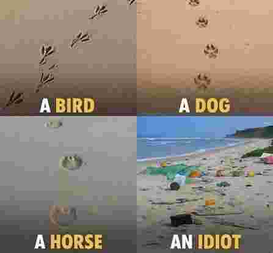

विदेह प्रथम मैथिली पाक्षिक ई पत्रिका
प्रणव कुमार झा
प्लास्टिकक बढ़ैत उपयोग, कचरा प्रबंधनक संकट आ विकल्पक खोज
[ प्रणव कुमार झा, राष्ट्रीय परीक्षा बोर्ड, नई दिल्ली]
करीब पच्चीस बरख पुरान गप्प हेतैक। हम अपन एकटा परिचित संजीव कक्का संगे नानी गाम सँ वापस घुरैत रही। भोरुक समय छल, लगभग पाँच-छः बजे के। ओहि समय नानी गाम धरि आबय-जाय लेल कोनो नियमित सार्वजनिक यातायातक सुविधा नहि छल। नानी गाम से आन जान के दु टा बाट छल। एकटा फरदहा-सकरी चीनी मील रूट जकरा लेल भठोंखैर पर ट्रेकर पकड़बा के होई छल आ एकटा छल सकरी-धरौरा रूट, जकरा लेल पाकड़ी गाछ तर तक पैदल जाय के होई छल। हम सब पाकड़ी गाछ तर पैरे जा रहल छलहु।
ओहि भोर हम दुनू पाकड़ी गाछ दिस पैरे-पैरे बढ़ि रहल छलहु। बाटमे गामक एकटा धनाढ्य परिवार, बासो नानाक घर पड़ैत छल। बड़का घर, ओतबे बड़का दलान, विशाल खलिहान, चारू कात छहरदिवारी आ सामने एकटा बड़का फाटक। पिछला राति हुनकर घरमे कोनो लगन छल।
भीतर जे दृश्य देखलहुँ, तऽ कनी अचम्भित भऽ गेलहुँ। आँगन-खलिहानमे उज्जर-उज्जर कप, प्लेट, गिलास, चम्मच जेकाँ देखाइ पड़ैत असंख्य चीज पसड़ल छल। हमरा लेल ई दृश्य अनजान छल। उत्सुकता बढ़ल तऽ संजीव कक्का बुझेलनि - “ई सभ रेडीमेड बर्तन छैक। बड़का लोक सभ लगन-बियाहमे एकर उपयोग करैत छथि। उपयोग करू आ फेकि दिअ। नै ककरो घर सँ बर्तन माँगय पड़त, नै फेर वापस करय पड़त।”
कक्काक बात सुनि हमरा मोनमे एकाएक किछु वर्ष पहिनेक बुच्ची मौसीक बियाहक दृश्य उभरि आयल। ओहि बियाहमे कतेको घर सँ कप, गिलास, प्लेट, चम्मच आदि माँगि-माँगि कऽ जुटाओल गेल छल। ककरो घर सँ चारि टा प्लेट, ककरो सँ पाँच गिलास, ककरो सँ कप आ एहि तरहें पूरा बियाहक व्यवस्था चलल छल। ओहि समय हमरा मोनमे एकटा सहज विचार आयल छल “कतेक बढ़िया सुविधा छैक बड़का लोकक लगनमे! बर्तनक झंझट नहि, माँगय-पाछयक जरूरत नहि; उपयोग करू आ फेकि दिअ।”
तखन ई सुविधा हमरा बड्ड निक सुविधा जेकाँ लगल छल। नहि बुझल छल जे “उपयोग करू आ फेकि दिअ” वाला ई छोट संस्कृति एक दिन हमर सभक लेल कतेक पैघ पर्यावरणीय प्रश्न बनि जाएत।
समय बीतैत गेल। ओहि भोरक घटना सेहो स्मृतिक कोनो कोनमे दबि गेल। मुदा बादमे जीवनमे किछु एहन दृश्य देखय लेल भेटल, जे ओ पुरान दृश्यकेँ एकदम नव अर्थ दऽ गेल। धीरे-धीरे बुझना गेल जे जकरा हम सुविधा बुझने रही, से वास्तवमे समस्या के जन्म देबाक एकटा तरीका सेहो भऽ सकैत अछि। जे वस्तु हमरा लेल उपयोगक बाद समाप्त भऽ जाइत अछि, प्रकृतिक लेल ओकर जीवन तखनहि शुरू होइत अछि।
एहि बातक कटु अनुभव हमरा अंडमानक शहीद द्वीपमे भेल।प्राकृतिक सौन्दर्य लेल नेचुरल ब्रिज बीच पर जखन दोबारा गेल रही। एहि बेर एकटा मछुआराक संग कनी हिम्मत कऽ समुद्रक कात सँ आगाँ दिस बढ़ि गेलहुँ। जते-जते आगाँ बढ़ैत गेलहुँ, प्रकृतिक एकटा दोसर चेहरा सामने अबैत गेल। मेङ्ग्रुवक झाड़ि बीच मारिते रास खाली प्लास्टिकक बोतल फँसल छल। समुद्रक लहरि जे सामग्री अपन संग बहा कऽ अनने छल, से ओहि झाड़ि सभमे अटक गेल छल।
किछु क्षण धरि हम चुपचाप ओहि दृश्यकेँ देखैत रहलहुँ। सामने समुद्र छल, मेङ्ग्रुव छल, प्रकृतिक अद्भुत सौन्दर्य छल आ ओहि सौन्दर्यक बीच मानवक फेंकल प्लास्टिकक बोतल सभ अपन उपस्थिति दर्ज करा रहल छल। मनमे एकटा टीस उठल जे भगवानक देल एतेक मनोरम प्राकृतिक स्थानकेँ सेहो हम सभ नहि छोड़लहुँ!

ओहि क्षण पच्चीस बरख पहिने देखल बासो नानाक घरक ओहि “उपयोग करू आ फेकि दिअ” वाला दृश्य फेर आँखिक सामने आबि गेल। फरक मात्र एतबे छल जे तखन हम आँगनमे फेंकल गेल उज्जर कप-प्लेटकेँ सुविधा बुझने रही, आ आब समुद्रक मेङ्ग्रुवमे फँसल प्लास्टिकक बोतलकेँ ओकर परिणामक रूपमे देख रहल छलहु।
मनमे एकटा आरो भयावह प्रश्न उठल की पता, किछु वर्ष बाद ई मनोरम समुद्रतट सभ सेहो महानगरक कूड़ाघर जेकाँ प्लास्टिकक बोतल, पैकेट आ कचड़ासँ भरि जाए? की हमर अगिला पीढ़ी प्राकृतिक सौन्दर्य देखय लेल समुद्रक कात जाएत, वा मनुष्य द्वारा छोड़ल कचराक ढेर?
ओहि दिन बुझना गेल जे प्लास्टिकक प्रश्न केवल प्लास्टिकक प्रश्न नहि अछि। ई हमर जीवन-शैलीक प्रश्न अछि। ई हमर “उपयोग करू आ फेकि दिअ” वाली मानसिकताक प्रश्न अछि। हम अपन घरक कचरा डिब्बामे फेकि कऽ निश्चिन्त भऽ जाइत छी। मुदा ओ डिब्बासँ बाहर निकलल वस्तु कहाँ जाइत अछि? ककरा जिम्मेदारी अछि? जे प्लास्टिक हम पाँच मिनट लेल उपयोग करैत छी, ओकर पर्यावरणीय जीवन कतेक लम्बा अछि? शहरक नालासँ नदी धरि, नदीसँ समुद्र धरि, खेतसँ माटि धरि आ भोजन श्रृंखलासँ मानव शरीर धरि! एहि प्रश्नसभक उत्तर खोजैत-खोजैत ई लेख जन्म लेने अछि। ई प्रयास अछि बुझबाक जे पछिला किछु दशकमे हमर उपभोगक आदत कतय बदलल, प्लास्टिकक उपयोग किएक बढ़ल, कचरा प्रबंधनक व्यवस्था कहाँ धरि सफल भेल, शहर आ गाँव पर एकर की प्रभाव पड़ि रहल अछि, कृषि आ पर्यावरणक समक्ष कोन नव चुनौती अछि, एकल-उपयोग प्लास्टिक पर प्रतिबंधक बाद जमीन पर की बदलल आ सभसँ महत्त्वपूर्ण जे की हम सभक लग एहन व्यवहारिक विकल्प अछि, जे सुविधा आ पर्यावरण दुनूकेँ संग लऽ कऽ चलि सकय?
आधुनिक जीवनमे प्लास्टिक एहन सामग्री बनि गेल अछि, जाहिसँ पूर्ण रूप सँ अलग भऽ कऽ दैनिक जीवनक कल्पना करब कठिन बुझाइत अछि। घरक रसोईसँ लऽ कऽ अस्पताल, विद्यालय, बाजार, उद्योग, कृषि, परिवहन आ व्यापार धरि, लगभग प्रत्येक क्षेत्रमे प्लास्टिकक कोनो-ने-कोनो रूपमे उपयोग होइत अछि। एकर हलुक वजन, टिकाउपन, कम लागत, जलरोधक क्षमता आ आसानीसँ आकार देबाक सुविधा एकरा औद्योगिक अर्थव्यवस्थाक प्रिय सामग्री बना देलक। मुदा जे वस्तु मानव जीवनकेँ सुविधाजनक बनबैत अछि, ओहि वस्तुक जीवन समाप्त भेलाक बाद ओकर प्रबंधन नहि होय तँ ओहि सुविधा कचरा संकटमे बदलि जाइत अछि।
प्लास्टिकक असली समस्या ओकर अस्तित्व मात्र नहि अछि। समस्या अछि एकल उपयोगक बढ़ैत संस्कृति, अत्यधिक पैकेजिंग, स्रोत पर कचरा पृथक्करणक कमी, अपर्याप्त संग्रहण, पुनर्चक्रणक असमान क्षमता आ खुलामे फेंकल गेल प्लास्टिकक पर्यावरणमे पहुँचि जाएनाइ। भारतमे एहि चुनौतीकेँ सामना करबाक लेल खाली “प्लास्टिक बन्द करू” कैम्पेन पर्याप्त नहि अछि। चिकित्सा, खाद्य-सुरक्षा, उद्योग आ अनेक तकनीकी क्षेत्रमे प्लास्टिकक उपयोगक वास्तविक आवश्यकता सेहो अछि। तेँ प्रश्न ई होबाक चाही जे कोन प्लास्टिक आवश्यक अछि, कोन उपयोग अनावश्यक अछि, कतय पुनः उपयोग सम्भव अछि, कतय सुरक्षित विकल्प उपलब्ध अछि आ जे प्लास्टिक उपयोगमे अबैत अछि ओकर संग्रहण तथा पुनर्चक्रणक जिम्मेदारी के उठाओत।
पिछला दु दशकमे भारतमे उपभोगक स्वरूपमे उल्लेखनीय परिवर्तन भेल अछि। संगठित खुदरा बाजार, छोट-छोट पैकेजमे बिकैत वस्तु, घर धरि सामान पहुँचेनिहार व्यवस्था, तैयार भोजन आ ऑनलाइन खरीदारीक विस्तारसँ पैकेजिंगक मात्रा सेहो बढ़ल अछि। एकटा सामान्य परिवारक दैनिक कचरामे दूधक पैकेट, खाद्य पदार्थक आवरण, बोतल, किराना सामानक थैला, घरेलू वस्तुक पैकेजिंग आ भोजन वितरणक डब्बासभ एक महत्वपूर्ण हिस्सा बनि सकैत अछि। समस्या तखन गम्भीर होइत अछि जखन उपभोक्ताक हाथसँ निकलल एहि वस्तुसभक अगिला यात्रा अस्पष्ट भऽ जाइत अछि।
हम प्रायः कचरा डिब्बामे डालि देलाक बाद मानि लैत छी जे समस्या समाप्त भऽ गेल। मुदा कचरा डिब्बामे पड़लाक बाद वास्तवमे ओकर यात्रा शुरू होइत अछि। यदि घर, दुकान अथवा संस्थानमे गील आ सूखा कचरा अलग नहि होइत अछि तँ पुनर्चक्रण योग्य कागज, धातु, काँच आ प्लास्टिक गील कचरासँ दूषित भऽ जाइत अछि। एहि सँ संसाधन पुनर्प्राप्ति कठिन होइत अछि आ अन्ततः मिश्रित कचराक एक पैघ हिस्सा डम्पिंग स्थल अथवा लैंडफिलमे फेंक देल जाय अछि।
भारतक कचरा प्रबंधनक नीतिमे आब एहि बिन्दु पर महत्वपूर्ण परिवर्तन देखाइत अछि। एक अप्रैल 2026 सँ ठोस अपशिष्ट प्रबंधन नियम, 2026 प्रभावी भेल अछि, जे 2016 केर नियमकेँ प्रतिस्थापित करैत अछि। नव नियममे स्रोत पर कचरा पृथक्करणकेँ अधिक स्पष्ट बनबैत चारि वर्ग मे कचरा अलग करबाक व्यवस्था कएल गेल अछि - गीला कचरा, सूखा कचरा, स्वच्छता-संबंधी कचरा आ विशेष सावधानी वाला कचरा। एहि ढाँचाक उद्देश्य कचरा उत्पन्न भेलाक बाद खाली ओकरा उठेनाइ नहि, बल्कि ओकरा संसाधनमे बदलबाक आ अनावश्यक रूपसँ लैंडफिलमे जाए सँ रोकबाक अछि।
शहरमे प्लास्टिक प्रदूषणक एकटा प्रत्यक्ष प्रभाव जलनिकासी व्यवस्थामे देखाइत अछि। हलुक प्लास्टिक थैला, खाद्य पैकेट, बोतल, कप आ अन्य सामग्री वर्षाक पानीक संग नाला धरि पहुँचि जाइत अछि। नाला जाम होयब खाली सफाईक समस्या नहि अछि; भारी वर्षाक समय ई जलजमावकेँ बढ़ा दै अछि, जाहिसँ यातायात, व्यापार, आवासीय क्षेत्र आ सार्वजनिक स्वास्थ्य प्रभावित होइत अछि। नदी, पोखैर अथवा अन्य जलस्रोतमे पहुँचल प्लास्टिक जलचर जीव लेल सेहो खतरा बनि जाय अछि। समयक संग प्लास्टिक छोट कणमे टूटि माइक्रोप्लास्टिकक रूप धारण करैत अछि, जे जल, माटि आ खाद्य श्रृंखलासँ जुड़ल नव पर्यावरणीय चिंता उत्पन्न करैत अछि।
प्लास्टिक संकट खाली महानगरक समस्या नहि अछि। ग्रामीण भारतमे सेहो बाजारक विस्तार आ पैकेज्ड वस्तुक पहुँचसँ प्लास्टिकक उपयोग बढ़ल अछि। खाद्य पदार्थक छोट पैकेट, कृषि-सामग्रीक पैकेजिंग, बोतल, घरेलू उपभोगक सामग्री आ विभिन्न प्रकारक थैला गाँव धरि पहुँचि चुकल अछि। कृषि क्षेत्रमे खेतमे फेंकल गेल प्लास्टिक विशेष चिन्ताक विषय अछि, कारण ओकर संग्रहण शहरक तुलनामे कठिन भऽ सकैत अछि। कृषि-संबंधी प्लास्टिक, पैकेजिंग अथवा अन्य अवशिष्टक उचित संग्रहण नहि भेल तँ ओकर पर्यावरणीय प्रभाव दीर्घकाल धरि रहि सकैत अछि। तेँ ग्रामीण क्षेत्रमे प्लास्टिक प्रबंधनक समाधान खाली किसान अथवा ग्रामीण उपभोक्ताकेँ जिम्मेदार ठहराबय सँ नहि, बल्कि उत्पादक, बाजार, स्थानीय निकाय आ संग्रहण व्यवस्था सभकेँ जोड़िकऽ खोजबाक आवश्यकता अछि।
एकल उपयोग प्लास्टिक एहि संकटमे सर्वाधिक दृश्यमान प्रतीक अछि। जे वस्तु कुछ मिनट अथवा कुछ घण्टा के लेल उपयोग भऽ कऽ सालो साल धरि पर्यावरणमे प्रदूषण रूप मे रहय अछि, ओकरा पर विशेष ध्यान देनाइ अति आवश्यक अछि। भारत सरकारक 2021 केर संशोधन नियमक आधार पर एक जुलाई 2022 सँ अनेक पहिचानल एकल उपयोग प्लास्टिक वस्तुक निर्माण, आयात, भंडारण, वितरण, बिक्री आ उपयोग पर प्रतिबंध लागू केलक। एहि सूचीमे प्लास्टिक डंडी वाला कान सफाईक डंडी, गुब्बाराक डंडी, प्लास्टिक झंडा, मिठाई आ आइसक्रीमक डंडी, सजावटी पॉलीस्टाइरीन, प्लेट, कप, गिलास, काँटा, चम्मच, चाकू, स्ट्रॉ, ट्रे आदि शामिल छल। इकतीस दिसम्बर 2022 सँ एक सौ बीस माइक्रोनसँ कम मोटाई वाला प्लास्टिक कैरी-बैग पर सेहो प्रतिबंध लागू भेल।
मुदा कानून बनि जएनाइ आ व्यवहार बदलि जएनाइ दू अलग बात अछि। यदि बाजारमे सस्ता आ आसानीसँ उपलब्ध विकल्प नहि अछि, तँ प्रतिबंधित वस्तुक बदला दोसर अनियमित सामग्री बाजारमे आबि सकैत अछि। स्वाइत ई प्रतिबंध के बावजूद बाजार मे एहि सभ सामाग्री बंद नहि भेल। तेँ एकल उपयोग प्लास्टिकक विरुद्ध नीति संगहि वैकल्पिक सामग्रीक उत्पादन, आपूर्ति, गुणवत्ता आ मूल्यक प्रश्नकेँ सेहो समान महत्त्व देबाक आवश्यकता अछि।
उत्तर भारतक शहर आ कस्बामे भोजनक होम डिलेवरीक बढ़ैत संस्कृति एहि समस्याकेँ नव आयाम देलक अछि। एकटा भोजनक आदेशक संग भोजनक डब्बा, ढक्कन, चटनीक छोट पन्नी, चम्मच, काँटा, सॉसक पैकेट, टिश्यू आ बाहरी थैला सेहो आबय अछि। एहि सभमे सँ प्रत्येक वस्तु अनिवार्य नहि होइत अछि। खाद्य सुरक्षा लेल उचित पैकेजिंग जरूरी अछि, मुदा अनावश्यक पैकेजिंगक कमी करब सम्भव अछि। ग्राहककेँ अतिरिक्त चम्मच अथवा अन्य सामग्री नहि लेबाक विकल्प देनाइ, पुनः उपयोग योग्य भोजन-पात्रक जमा-वापसी व्यवस्था विकसित करनाइ आ आवश्यक पैकेजिंगकेँ पुनर्चक्रण योग्य सामग्रीमे बदलनाइ एहि समस्याक व्यवहारिक दिशा भऽ सकैत अछि।
प्लास्टिकक विकल्पक चर्चा करैत समय भारतक जूट उद्योग विशेष महत्त्व रखैत अछि। सिंथेटिक आ प्लास्टिक पैकेजिंग समयक संग पारंपरिक जूट पैकेजिंगसँ लागत, वजन, सुविधा आ आपूर्तिक दृष्टिसँ प्रतिस्पर्धा करैत गेल आ उपयोगमे जूट घटल। भारत सरकार जूट पैकेजिंगक उपयोगकेँ संस्थागत बाजार उपलब्ध कराबय लेल कानूनक माध्यमसँ समर्थन दैत रहल अछि। 2024–25 मौसम लेल खाद्यान्नक एक सय प्रतिशत आ चीनीक बीस प्रतिशत पैकेजिंग लेल जूटक अनिवार्य उपयोग निर्धारित कएल गेल छल। एहि उदाहरणसँ स्पष्ट होइत अछि जे सरकार यदि कोनो वैकल्पिक सामग्री लेल निश्चित बाजारक माँग सुनिश्चित करैत अछि तँ पारंपरिक उद्योगकेँ नव जीवन भेटि सकैत अछि। मुदा जूटक पुनरुत्थान खाली भावनात्मक आग्रहसँ सम्भव नहि अछि। जूटक थैला यदि प्लास्टिकसँ बहुत महँग, भारी अथवा कम उपलब्ध रहत तँ सामान्य उपभोक्ता स्वतः ओकरा नहि अपनायत। तेँ जूट उद्योग लेल लक्षित आर्थिक सहायता, आधुनिक मशीन, डिजाइन सुधार, उत्पाद विविधीकरण आ निश्चित संस्थागत बाजार आवश्यक अछि। सब्सिडी सेहो स्थायी निर्भरता बनाबय वाला नहि, बल्कि उद्योगकेँ तकनीकी रूप सँ मजबूत करय, लागत घटाबय आ बाजारमे प्रतिस्पर्धी बनाबय वाला होबाक चाही। जूटकेँ खाली खाद्यान्नक बोरा धरि सीमित रखबाक बदला आधुनिक खरीदारी थैला, किराना बैग, औद्योगिक पैकेजिंग, घरेलू उपयोग, हस्तशिल्प, सजावटी सामग्री आ अन्य उपयोगमे विस्तार देल जा सकैत अछि। राष्ट्रीय जूट विकास कार्यक्रममे उत्पाद विविधीकरण, उत्पादकता, किसान आय आ जूटकेँ प्लास्टिकक विकल्पक रूपमे बढ़ावा देबाक दिशा पहिनेसँ शामिल रहल अछि। यदि एहि प्रयासकेँ आधुनिक डिजाइन, ई-वाणिज्य बाजार, सरकारी खरीद आ ग्रामीण उद्यमसँ जोड़ल जाए तँ जूट एकटा हरित उद्योगक रूपमे नव पहचान बना सकैत अछि।
भारतक पारंपरिक पत्तल आ दोना सेहो एहि परिवर्तनक महत्त्वपूर्ण हिस्सा भऽ सकैत अछि। साल, सियाली, बाँस, केला आ अन्य वनस्पति आधारित सामग्रीसँ बनल पत्तल-दोना भारतक ग्रामीण आ सांस्कृतिक जीवनमे बहुत पुरान स्थान रखैत अछि। आधुनिक अर्थव्यवस्थामे एहि परंपराकेँ लघु उद्योग, महिला स्वयं सहायता समूह आ स्थानीय उद्यमसँ जोड़ल जा सकैत अछि। भारतीय कृषि अनुसंधान परिषदक मिजोरममे कएल अध्ययनमे सुपारीक झड़ल पातक आवरणसँ प्लेट निर्माणक तकनीक तथा महिला समूहक माध्यमसँ आय सृजनक संभावना देखाओल गेल अछि।
एहि प्रकारक विकल्पक एकटा विशेष लाभ ई अछि जे कच्चा माल स्थानीय स्तर पर उपलब्ध भऽ सकैत अछि आ ओकर मूल्यवर्धन गाँवमे कएल जा सकैत अछि। मुदा प्राकृतिक सामग्रीक उपयोग सेहो टिकाऊ ढंगसँ होबाक चाही। झड़ल पात अथवा टिकाऊ ढंगसँ संग्रहित सामग्रीक उपयोग प्राथमिकता पाबय; गाछक अनावश्यक कटाई अथवा अत्यधिक संग्रहण पर्यावरण-अनुकूल विकल्पक मूल भावना केँ कमजोर कऽ सकैत अछि।
कागजक कप आ प्लेटकेँ सेहो सावधानीपूर्वक देखबाक आवश्यकता अछि। बाजारमे उपलब्ध प्रत्येक “कागजक” कप वास्तवमे प्लास्टिक-मुक्त नहि होइत अछि। किछु कागजी कपमे बहुलक आधारित परत रहैत अछि, जाहिसँ ओकर पुनर्चक्रण कठिन भऽ सकैत अछि। तेँ खाली सामग्रीक नाम देखिकऽ ओकरा पर्यावरण-अनुकूल घोषित करब उचित नहि अछि। भविष्यक विकल्पमे बिना प्लास्टिक परतक कागज, मोल्डेड फाइबर, कृषि-अवशेष आधारित रेशेदार सामग्री, बाँस, कुसियारक खोइया आ अन्य प्रमाणित जैव-आधारित सामग्री पर वैज्ञानिक शोध आ औद्योगिक उत्पादन बढ़ेनाइ अधिक उपयोगी रहत।
प्लास्टिकक बोतल घटेबाक एकटा व्यवहारिक उपाय सुरक्षित सार्वजनिक वाटर डिस्पेंसिंग केन्द्रक विस्तार अछि। “बोतलबंद पानी बन्द करू” कहब तखनहि व्यावहारिक अछि जखन यात्रियों आ नागरिककेँ सुरक्षित विकल्प उपलब्ध होय। भारतीय रेल पहिनेसँ जल-वेंडिंग मशीनक माध्यमसँ सुलभ पेयजल उपलब्ध कराबयक प्रयास कऽ चुकल अछि। मुदा ओ एखन समुचित रूप से प्रभावी नै बनल अछि। एहि दिशा मे आरो बेसी ठोस कदम आ जागरूकता अपेक्षित अछि।
एहि अनुभवकेँ रेलवे स्टेशनक बाहर सेहो विस्तार देल जा सकैत अछि। बस अड्डा, विद्यालय, विश्वविद्यालय, सरकारी कार्यालय, अस्पताल, बाजार, मॉल, पार्क, पर्यटन स्थल आ पैघ भोजनालयमे सुरक्षित वाटर डिस्पेंसिंग मशीन स्थापित कएल जा सकैत अछि। मुदा एहि व्यवस्थाक सफलता लेल खाली मशीन लगेनाइ पर्याप्त नहि अछि। पानीक नियमित गुणवत्ता परीक्षण, फिल्टरक समय पर परिवर्तन, मशीनक सफाई आ स्पष्ट जवाबदेही आवश्यक अछि।
सरकारी कार्यालय आ संस्थानमे प्लास्टिक कम करबाक सम्भावना ताहूसँ बेसी अछि। कार्यालय, विद्यालय, विश्वविद्यालय, अस्पताल, प्रशिक्षण संस्थान आ सरकारी कार्यक्रममे रोजाना जे कप, गिलास, प्लेट आ पानीक बोतल उपयोग होइत अछि, ओकर एकटा पैघ हिस्सा पुनः उपयोग योग्य सामग्रीसँ बदलल जा सकैत अछि। भीतर भोजन करनिहार लेल स्टील अथवा काँच वा चीनी मिट्टी क बर्तन अधिक उपयुक्त भऽ सकैत अछि। आयोजन अथवा बाहरी उपयोगमे पत्तल, सुपारी पात अथवा मोल्डेड फाइबर जेकाँ विकल्प अपनाओल जा सकैत अछि।
प्लास्टिक संकटसँ निपटबाक एकटा कम चर्चित मुदा अत्यन्त प्रभावी माध्यम अछि सरकारी खरीद नीति। सरकार आ सार्वजनिक संस्थान बहुत पैघ खरीददार छथि। यदि सरकारी कार्यालय, अस्पताल, विद्यालय, रेलवे, विश्वविद्यालय आ सार्वजनिक कार्यक्रममे खरीद नीति बदलैत अछि तँ बाजारमे उत्पादनक दिशा सेहो बदलि सकैत अछि। खाली सबसे सस्ता सामान खरीदबाक बदला निविदामे पुनः उपयोग, पुनर्चक्रण, टिकाऊपन, जीवन-चक्र लागत आ पर्यावरणीय प्रभाव जेकाँ मानदंड जोड़ल जा सकैत अछि।
प्लास्टिकक विकल्पक चर्चा करैत समय ई सेहो बुझब जरूरी अछि जे एकटा सामग्री प्रत्येक उपयोगक लेल उपयुक्त नहि होइत अछि। स्टील, काँच, जूट, कपड़ा, बाँस, पत्तल, सुपारी पात, मोल्डेड फाइबर, कागज आ पुनर्चक्रित सामग्रीक अपन-अपन उपयोग क्षेत्र अछि। कार्यालयमे स्टीलक गिलास बेहतर विकल्प भऽ सकैत अछि, किराना खरीदमे जूट अथवा कपड़ाक थैला, ग्रामीण आयोजनमे पत्तल, बाहरी भोजनमे मोल्डेड फाइबर अथवा पुनः उपयोग योग्य पात्र, आ औद्योगिक क्षेत्रमे आवश्यकतानुसार जूट अथवा पुनर्चक्रित पैकेजिंग। भविष्यक नीति “एकटा सामग्री बनाम दोसर सामग्री”क विवादसँ आगाँ बढ़ि “सही उपयोग लेल सही सामग्री” पर आधारित होबाक चाही।
एहिमे मूल्य एकटा निर्णायक कारक छैक। यदि प्लास्टिकक थैला सस्ता अछि आ जूटक थैला पाँच गुना महँग, तँ खाली पर्यावरणीय चेतना गरीब अथवा निम्न-मध्यम आय वर्गक व्यवहार नहि बदलि सकत। तेँ वैकल्पिक उद्योगक प्रारम्भिक लागत घटेनाइ आवश्यक अछि। जूटक मशीन, पत्तल निर्माणक उपकरण, रेशेदार पैकेजिंग, पुनः उपयोग योग्य भोजन-पात्र, धुलाई व्यवस्था आ वाटर डिस्पेंसिंग मशीन लेल प्रभावी रुप्स से लक्षित पूँजी सहायता देनाइन आवश्यक अछि। उद्देश्य अनन्त काल धरि सब्सिडी देनाइ नहि, बल्कि विकल्पकेँ एतेक मजबूत बनेनाइ होबाक चाही जे समयक संग ओ सामान्य बाजारमे प्रतिस्पर्धा कऽ सकय।
एहि सन्दर्भमे ग्रामीण महिला स्वयं सहायता समूहक भूमिका विशेष रूप सँ महत्त्वपूर्ण भऽ सकैत अछि। जूटक थैला, पत्तल-दोना, सुपारी पातक प्लेट, बाँसक उत्पाद, कपड़ाक थैला आ कृषि-अवशेष आधारित सामग्रीक निर्माण स्थानीय स्तर पर रोजगार उत्पन्न कऽ सकैत अछि। भारतीय कृषि अनुसंधान परिषदक सुपारी पात प्लेट संबंधी अध्ययनमे समुदाय आधारित उत्पादन आ महिला समूहक आर्थिक सशक्तिकरणक संभावना देखाओल गेल अछि। एहि मॉडलकेँ स्थानीय संसाधनक आधार पर देशक विभिन्न क्षेत्रमे विकसित कएल जा सकैत अछि।
कचरा प्रबंधनक श्रृंखलामे कचरा बीननिहार श्रमिकक भूमिका सेहो अनदेखा नहि कएल जा सकैत अछि। भारतक अनेक शहरमे अनौपचारिक क्षेत्रक श्रमिक प्लास्टिक, कागज, धातु आ काँच जेकाँ मूल्यवान सामग्रीकेँ संग्रहित करैत छथि। यदि नवीकरणीय कचरा प्रबंधन व्यवस्था बनैत अछि तँ हुनकर भूमिका समाप्त करबाक बदला औपचारिक संग्रहण आ सामग्री पुनर्प्राप्ति व्यवस्थामे हुनकर सम्मानजनक भागीदारी सुनिश्चित करबाक आवश्यकता सेहो अछि। सुरक्षा उपकरण, पहचान, प्रशिक्षण आ सामाजिक सुरक्षा जेकाँ पहल हुनकर कार्यस्थितिमे सुधार आन सकैत अछि।
प्लास्टिकक समस्या मे उत्पादकक जिम्मेदारीसँ सेहो जुड़ल अछि। जे कम्पनी पैकेजिंग बाजारमे भेजैत अछि, ओकर जिम्मेदारी खाली वस्तु बेचि देलाक संग समाप्त नहि होबाक चाही। विस्तारित उत्पादक जिम्मेदारीक व्यवस्था एहि सिद्धांत पर आधारित अछि जे उत्पादक, आयातक आ ब्रांड-मालिक अपन पैकेजिंगक जीवन-चक्र समाप्त भेलाक बाद ओकर संग्रहण आ पुनर्चक्रणक व्यवस्था लेल जिम्मेदार होथि।
भारतक लेल चुनौती प्लास्टिकक सस्ता विकल्प मात्र खोजब नहि, बल्कि ओकरा सस्ता, टिकाऊ, सुरक्षित, सहज उपलब्ध आ रोजगार सृजनकारी बनाएब अछि। यदि विकल्प महँग, दुर्लभ वा खराब गुणवत्ताक हेतैक, तँ उपभोक्ता ओकरा नहि अपनायत आर कानूनक प्रभाव सेहो सीमित रहि जेतैक। एहि लेल तकनीक, बजार, नीति आ व्यवहार चारूदिसा एकसंग काज करै पडत
विद्यालय एहि परिवर्तनक एकटा महत्त्वपूर्ण केन्द्र भऽ सकैत अछि। बच्चासभकेँ खाली “प्लास्टिक खराब अछि” कहब पर्याप्त नहि। हुनका ई बुझेनाइ जरूरी अछि जे कचरा उत्पन्न करबाक बाद ओकर जिम्मेदारी समाप्त नहि होइत अछि। यदि विद्यालय परिसरमे पुनः उपयोग योग्य पानीक बोतल, अलग-अलग कचरा डिब्बा, कम्पोस्टिंग, पुनर्चक्रित कागज, जूट अथवा कपड़ाक थैला आ एकल-उपयोग प्लास्टिक पर नियंत्रणक व्यवस्था रहत तँ बच्चा स्वयं व्यवहारिक उदाहरण देखत। घरमे सेहो ओ एहि व्यवहारकेँ लऽ जा सकत।
नगर निकायसभ लेल एकटा उपयोगी पहल ई भऽ सकैत अछि जे प्रत्येक नगर अपन “प्लास्टिक प्रवाह मानचित्र” तैयार करय। कोन बाजारसँ कतेक प्लास्टिक निकलैत अछि, भोजनालयक हिस्सा कतेक अछि, पैकेजिंग उद्योगक हिस्सा कतेक अछि, कतेक प्लास्टिक पुनर्चक्रण योग्य अछि, कतेक नालामे पहुँचैत अछि आ कतेक सामग्री अनौपचारिक श्रमिक संग्रहित करैत छथि, एहि आँकड़ाक आधार पर स्थानीय नीति बनाओल जा सकैत अछि। एकर फलस्वरूप “सभ शहर लेल एकहि समाधान”क बदला स्थानीय आवश्यकता अनुसार योजना बनत।
अंततः प्लास्टिक संकट खाली प्लास्टिकक कहानी नहि अछि। ई हमर उत्पादनक तरीका, उपभोगक संस्कृति, बाजारक प्राथमिकता, सार्वजनिक व्यवस्थाक क्षमता आ सामुदायिक जिम्मेदारीक कहानी अछि। यदि हम खाली प्रतिबंध लगाबी मुदा विकल्प उपलब्ध नहि कराबी तँ समस्या के समाधान नै भेटत। यदि हम खाली कचरा उठाबी मुदा स्रोत पर कचरा कम नहि कराबी तँ खर्च बढ़ैत रहत। यदि हम खाली पुनर्चक्रण पर निर्भर रहब मुदा अनावश्यक एकल उपयोग वस्तुक उत्पादन निरन्तर बढ़ैत रहत तँ समस्या बनल रहत।
परिवर्तनक शुरुआत बहुत पैघ घोषणा सँ नहि, बल्कि छोट-छोट व्यवहारिक निर्णयसँ भऽ सकैत अछि। एकटा प्लास्टिकक थैला कम उपयोग करब, एकटा पुनः उपयोग योग्य थैला अपनाएब, कार्यालयमे डिस्पोजेबल कपक बदला स्टीलक/काँच गिलास रखनाइ, सार्वजनिक स्थान पर सुरक्षित जल-भराईक व्यवस्था करनाइ, भोजन वितरणमे अनावश्यक चम्मच अथवा पैकेजिंग नहि देनाइ आ घरसँहि कचरा अलग करनाइ ई सभ छोट कदम मिलि कऽ पैघ परिवर्तनक आधार बनि सकैत अछि।
प्लास्टिकक भविष्य खाली एहि बात पर निर्भर नहि करत जे हम कतेक प्लास्टिक बन्द करैत छी। भविष्य एहि बात पर निर्भर करत जे हम कतेक बुद्धिमानीसँ उत्पादन करैत छी, कतेक जिम्मेदारीसँ उपभोग करैत छी आ उपयोग समाप्त भेलाक बाद सामग्रीकेँ कतेक सफलतासँ अर्थव्यवस्थामे वापस आनैत छी।
भारतकेँ प्लास्टिक विरोधी समाजसँ बेसी कचरा-सचेत, संसाधन-संरक्षक आ विकल्प-समर्थ अर्थव्यवस्था बनेबाक आवश्यकता अछि। जखन जूटक थैला प्लास्टिकसँ प्रतिस्पर्धी होयत, जखन पत्तल आ रेशेदार प्लेट सहज उपलब्ध होयत, जखन कार्यालयमे पुनः उपयोग सामान्य व्यवहार होयत, जखन सार्वजनिक स्थान पर सुरक्षित जल सहज उपलब्ध होयत आ जखन कचरा घरसँहि अलग होयत तखन प्लास्टिक संकटसँ निपटबाक लड़ाई कानूनक पन्नासँ निकलि कऽ समाजक व्यवहारमे प्रवेश करत।
आ शायद वास्तविक समाधान सेहो एतहि अछि। प्लास्टिककेँ खाली हटेनाइ नहि, बल्कि एहन व्यवस्था बनबेनाइ जाहिमे प्लास्टिकक अनावश्यक उपयोगक जरूरतहि नहि पड़य।
�
-प्रणव कुमार झा, ग्राम गोरापुर जिला बेगूसराय | संप्रति: एनबीईएमएस, नई दिल्ली
अपन मंतव्य editorial.staff.videha@zohomail.in पर पठाउ।
विदेहमे सभठाम ताकू / Search all Videha
Static full-text search · Pagefindलेखक/शीर्षक/अंक/वर्ष — खोज-विधा। गद्य/पद्य/शोध current/static + पुरान Videha/Sadeha contents खोजैत अछि। पोथी pothi.htm केर पूर्ण listing, श्रव्य-दृश्य Audio_Video.htm केर पूर्ण listing, पञ्जी videha-sadeha/panji-shards GitHub data, आ थेसारस/शब्दकोश videha-ejournal.github.io/data GitHub JSON corpus केँ query करैत अछि आ दूनू Quiz corpus मे dictionary/vocabulary/शब्दार्थ-सम्बन्धी प्रश्नोत्तरी परिणाम सेहो जोड़ैत अछि। Quiz videha-quiz आ GitHub user-site दूनू bilingual quiz corpus खोजैत अछि। Roman/IAST + देवनागरी cross-script search समर्थित। Issue/Year लेल संख्या दिअ। PDF-अभिलेख archive.org/VidehaAndSadeha सूची खोजैत अछि।